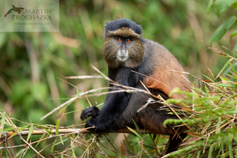

Kočkodani je společný český název pro pět rodů Allenopithecus, Cercopithecus, Erythrocebus, Chlorocebus a Miopithecus. Jsou to úzkonosí primáti z čeledi kočkodanovití, menší až středně velké opice obývající rozmanité ekosystémy subsaharské Afriky.
Všichni kočkodani mají poměrně štíhlý trup, dlouhé a štíhlé končetiny a dlouhý neredukovaný ocas, mají průměrnou hmotnost od 3 do 7 kg. Žijí v rozlehlých a rozličných oblastech Afriky jižně od Sahary, a jsou k tomuto životu různě přizpůsobeni. Většina kočkodanů, až na kočkodana husarského, nejrychlejšího běžce mezi primáty, je více či méně uzpůsobena výrazně delšími zadními končetinami, k životu na stromech. Lebku mají poměrně štíhlou a čelisti, v porovnání s ostatními kočkodanovitými kratší. Pohlavní dimorfismus se projevuje především délkou špičáků a velikosti těla, i když rozdílnost ve velikosti není tak patrná, jako u paviánů.

Zpět do menu